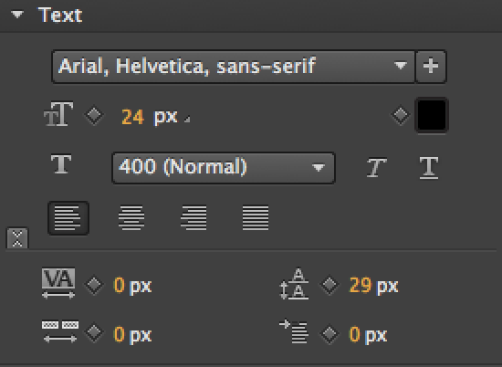

Edge Animate's User Interface
In a nutshell
This section will introduce you to the user interface of Edge Animate. We will quickly walk through its aspects, so you will learn where you can find your tools, the properties, the elements and what you can do with the library.
Big Picture
Edge Animate is an authoring tool for web motion design and interactive animations. Although web browsers only "understand" code language, this tool comes with a visual design surface, in order to help you create awesome and engaging content with ease and precision. The canvas here is based on a browser engine (WebKit/CEF) that is as close as possible to a real browser (Google Chrome, Apple Safari etc.), so that you can literally design in the browser. Since everything is rendered in real time, you can always see the results of changes right on the spot, and what you see is what you get. The output is 100% web standards complient, i.e. pure HTML, CSS and JavaScript. It thus works on all devices and in almost every context.
Although you could basically write the entire code manually, the effectiveness in terms of precise choreographies and control clearly speak in favor of using the design surface. Especially the timeline is a huge time saver, and the context-sensitivity of the property inspector makes sure that you always have all important properties at hand.
But let's see what the user interface looks like and what its different parts can be used for.
Overview
Before going into details, let's have a quick look at the general structure of the user interface and its most important parts:
The Stage
As the name "stage" already suggests, this is your design 'canvas', i.e. the place where you actually stage your choreographies. It is a visual representation of your composition at the current position of the playhead. This enables you to actually see the result already at design time, and WYSIWYG means you have the exact same result as if running the project in a browser.
Apart from displaying the result, you can actually edit the layout right on the stage or place new items via drag and drop. You can select items by simply clicking on them and change the positioning at any time by dragging them around. The stage itself is also customizable, since it is basically a DIV element. If you are not yet familiar with DIV containers and HTML in general it's not problem at all and you can ignore this detail. But if you are already familiar with HTML this hint gives you a clue where you can apply your existing knowledge. The stage is always the topmost element in your Animate composition.
Since the visual representation is output through a browser rendering engine, you have a realistic representation, not a simulation. As such it is also able to display custom HTML and CSS. Only scripts are not executed at design time. They only work when the composition is run in an actual browser.
The Tools Panel
As an authoring tool, Edge Animate offers a selection of tools, that are pretty similar to those you most likely know from familiar design tools. Since we are working in a browser environment, our options are rather limited here. Nevertheless, these tools are very helpful in the creation process and a big advantage over writing code manually.
The tools can be devided into three groups:
- mode/selection
- creation and view
- default settings
Most of the tools are familiar from other applications, like the selection tool on the left, the text creation tool or the hand to move the canvas. We will cover the single tools more extensively in the "Creation" chapter later on.
The property panel, also known as property inspector, is located on the left-hand side of the user interface and gives you control over the visual attributes of the currently selected element. It is context-sensitive, which means that it shows different options depending on your current selection. For instance, text elements have a special section for formatting, that is only shown when a text element is selected. Images have other options like background positioning, and so on. The default selection for the property inspector is the stage itself.
Understanding how the property inspector works is a fundamental aspect of working with Edge Animate, so we will get into the details of it in the follwing section.
The Elements Panel
The elements panel is the hierarchical representation of your projects' document structure. In terms of HTML you would speak of the DOM (document object model). It includes all the elements your composition consists of. The icon resembles the type of element, e.g. rectangle, text, symbol and so on. Note that the composition is what is rendered in the browser. Your project can contain elements that are (currently) not placed in the composition and therefore are not listed in the elements tree (symbols for instance can occasionally be loaded at a later point in time).
The position of an element within this listing is responsible for the display hierarchy. This means that elements that are on top of the list will also be placed in front of the elements listed below. An exception is the stage itself: Although it is listed on the topmost position in the elements panel, it is always displayed behind the other elements. Nesting can have a similar effect. We will come back to that in the Creation section.
This is what the elements panel looks like:
Besides giving you a representation of the composition structure, the elements panel also offers you several options:
- rearranging and grouping
- toggle visibility on/off
- lock elements
- change the elements name
- open actions
You can find the library right underneath the elements panel. It contains all the assets and relevant files of your project, even those which are currently not visible on the stage or in use. The library consists of several sections, one for each asset type.
You can find a more detailed description on the library panel and its functions in the subsequent sections.
The Timeline

The timeline is basically the command central of Edge Animate. This is where all the 'animation magic' happens and where you can find a chronological representation of your choreography. Keep in mind that every single symbol in your composition has it's own unique timeline. Read more on the timeline, its parts and their functions in the Panels section.
Property Inspector
The basics
In this section you will get introduced to the property inspector and the basic concept of properties in Edge Animate. You will learn about their functions and in which context they can be used. Note that almost all of the properties can be animated using so called keyframes. We will tackle that topic a bit later. Yet it is worth mentioning that the small diamond shaped button next to a property can be used to set such a keyframe for that particular property value on the timeline.
In order to provide a general overview first, we will focus on the basics of working with the property inspector in this chapter. You can find a reference list of all the different properties and their meaning in the Creation chapter of the Essentials Book.
Understanding the Property Inspector
The property inspector gives you detailed information about the currently selected element. It serves as a survey of all the properties that are responsible for the visible representation of that element. This can for instance be the stage itself, any given element or a symbol.
The listed property values are therefore closely linked to the visual representation on the stage. When you change a value in the inspector, the element on the stage will instantly display this change. This also works the other way around: When you change the position of an element by moving it on the stage, the properties for positioning in the property inspector will be updated accordingly.
This illustrates the fact, that the properties actually represent CSS values, that are used to create the visual representation on the stage and the actual composition. You can get the info about the according CSS attribute when you hover over the property in the inspector.
Most of the properties have a small diamond shaped icon next to the value. This is the option to set a keyframe on the timeline, which allows you to animate this property. Most of the properties can be animated, allowing you to create awesome effects. We will come back to that later.
Context
The property inspector is context sensitive, which means that it changes depending on what kind of element you have currently selected. This is due to the fact that the different types of elements have different aspects and therefore options in the property inspector. The advantage is that you can be sure that all available properties are applicable for the currently selected element type. You also have a better control and overview.
Let's have a quick look at the different contexts that you might encounter when working in Edge Animate:
Stage properties
If you have nothing else selected, the current context is the stage. This is the top most level in Edge Animate. The property inspector accordingly reveals the relevant properties of the stage.
As the containing element for the entire composition, the property inspector also gives you access to properties that apply to the entire composition when the stage is selected. Here you can define autoplay and can also find the options Down-level Stage for legacy browsers and settings for the Preloader.
Note that the stage itself is a DIV container and therefore can be modified. You can for example set a background color or change the size. These properties can be animated as well.

Symbol Properties
Symbols are a very integral part of Edge Animate, especially because of their independent timeline. They can be seen as some kind of composition within the composition. Therefore, a symbol has two different scopes: From the outer composition and from within the symbol itself.
Since the property inspector is context-sensitiv, it changes depending on the scope: On the outer level, it treats the symbol as an element. When you go into the symbol, the symbol becomes the new stage, and thus the property inspector chages accordingly.
The image on the left shows both states of the property inspector while a symbol is being selected: On the top image you see the context from the outside scope, and on the bottom image when being inside of the symbol.
You can see that a symbol is kind of an arbitrary matter: From the outside it resembles an element, within the symbol it is similar to the stage. We already looked at the stage, so let's have a look at what the property inspector offers when dealing with elements:
Element Properties
Besides the stage and symbols, elements are the most basic aspects you will encounter. Everything you place on the stage is basically an element. There are different types of elements however, depending on their type. For instance basic shapes are plain DIV elements. Text in Animate generelly is placed as a DIV element as well. The fundamental properties of element types are much alike in every context. You can find a summary of all the different properties and element types later in the Creation chapter of the Essentials book.
This is how the property inspector looks like when you select a plain element:

The most important aspects here are the Title of the element, the properties for visibility like display and opacity, the positioning and the color attributes.
Special Properties
Special Properties
As we have already indicated, there are different types of elements, each of which have specific properties. We don't want to go too much into detail here, just make sure that you understand that the property inspector gives you different options depending on the element type. Here is a quick overview of the most important aspects:

Text properties
Edge Animate allows you to place and modify text. When you select a text element you can not only edit the content but define the visual apperearance as well. Since these are different properties than with plain shapes, another section appears, offering you options for font family, text color, alignment, font size and so on.
Image Properties
When using images in your Edge Animate compositions, you have two options: Either use the image as background image for a DIV element, which is the default behavior, or within its own IMAGE tag. You can find the options next to the title in the top part of the property inspector when an image is selected. Note that like in any web context, it makes a difference whether an image is used in an image tag or as background image. Accordingly, you have different options in the property inspector.
Audio and Video Properties
Audio and Video elements have some unique properties that become available as soon as such a media element is selected. In the according section you can set the volume level and several presets, such as Autoplay, Loop and whether the file is to be preloaded. These are the options that come with HTML5 audio and video implementation.
Now that you have a basic understanding of the property inspector, it is time to have look at where the different element types can be found in your Library. We also want to take a closer look at the mighty Timeline. So let's move along.
In this section we will cover two of the core aspects of the Edge Animate user interface, the Library and the Timeline. A profound knowledge of their mechanisms and functions opens the gateway to successfull workflows and mastering complex Animate projects with ease. But no worries, we will tackle them one at a time. So let's get going...
The Library
It is important to always keep an overview of your project, especially when it grows bigger and more and more complex. In Animate, the library is a very handy feature in this regard. It is separated into several sections and lists all the assets of your project, from images to external scripts. You can find your library by default underneath the elements panel on the right-hand side of the stage.
The library is separated into several sections, according to the different asset types you can use: images, symbols, fonts, audio files, videos and scripts. This helps you to keep an overview of your assets and makes it really easy to work with, since you can simply drag items out of the library and drop them onto the stage. There are some distinctive features for each type, so let's have a closer look at them.
Images
Certainly the most commonly used type of assets in Animate projects are images, which are located in the topmost section. You can import images by using the "+" button or via drag and drop. If you choose to use the button, a window will pop up to let you search through your file system and import images, even several at a time. They will then be included into your library and once you save your project be stored in the images folder of your project.
Most of the times, however, a more convenient way is to simply drag and drop images onto the stage and remove them right away. This might sound odd, but you will notice that the images are still stored in the library. Removing them from the stage will only delete the instance of the image in the composition, not the image itself in the project. This lets you import all the images at once and then start sorting them and place them into your composition by dragging them onto the stage one at a time.
In order to make sure you have the right image selected in the library, you can click on the triangle next to the image icon or double click on its name to open a quick preview.
With a right click on the image name you can access the option "show in finder". This will lead you to the location of the image in your project, which is usually the "images" folder. Now with more complex projects it might become difficult to manage the ammount of images when they are all stored in one folder. Luckily, you can create subfolders in your finder to help you sort your project assets. Be carefull, though, changing the location of images that are already in use might lead to errors. So better sort your assets before you start creating the composition.
Symbols
A great deal of Edge Animate's potential lies in the use of symbols. We will discuss symbols and their role within Edge Animate in detail in a later chapter. This part is only about their place in the library. You can find the according section at the second position in the library panel. Unlike images, symbols are a unique kind of asset for Animate projects. You can create symbols from within your own composition or use symbols from other Animate projects.
In order to import symbols, you can again use the "+" button to search your file system for the appropriate symbol. Drag and drop is no option in this case. If you want to create a symbol, you can select one or several items on the stage and use the "+" button in the library and choose "Convert selection to symbol" or right click on one of the selected elements and use "Convert to Symbol...". The new symbol will then appear in the library. Again, you can delete the instance on the stage, the symbol itself will still remain in the project.
A special kind of symbol is the sprite sheet. A sprite sheet is an image, in which a movement is subdivided into a series of animation frames. When played quickly one after the other, the illusion of a continuous movement is created - similar to a flip book. When you import a sprite sheet as a symbol into Edge Animate, you can use the presets to automatically create keyframes. We will come back to that and spite sheets in general later in the Creation and Animation sections.
As with images, you can use the library to preview your symbols, using the triangle next to the symbol icon. If you double click on the symbol's name you can edit it, a double click on the symbol icon will navigate you into the symbol scope. You can also use a right click on the symbol's name for more options: Besides editing the symbol or changing its name you can also delete, duplicate or export it. Note that these options are only available, when you are currently outside of the symbol's scope. If that sounds a bit confusing right now, don't worry: it will become easier to understand once we get to know more about what symbols are.
Fonts
Typography can play an important part in expressing creativity. Luckily we are no longer confined to browser default fonts but have a huge variaty available via web fonts. The font panel in the library helps you keep track of the fonts used in your project, add and remove fonts and define fall backs. Use the "+" button to add new fonts and right click on an existing one to be able to remove it. Double click on a font to edit the fall back list or change the embed code. You can learn more about fonts and how to use them in Edge Animate in the corresponding chapter.
Audio and video
With HTML5, audio and video files can be included natively into a web context. Edge Animate supports this feature and therefore enables you to use sounds and videos in your Animate compositions. You can use the "+" option in the library panel or use drag and drop to import audio and video files into your project. Due to different browser support, it is advised to include different formats (mp3 and ogg for audio, for instance). You will notice that you have the different options listed under one name in the panel, so that it is easier to keep an overview. You can edit this selection name by double clicking on it. The name of the actual audio file can not be altered.
In order to place an audio or video file into your composition, you can either use drag and drop or right click on the file and select "Add to composition".
Scripts
Edge Animate allows you to include external script files like JavaScript libraries into your project, for instance the Edge Commons extension. In general you have two options here: Either use a local version and include the script from disk or use a CDN hosted version and include the library via URL. You can find both options when clicking on the "+" icon in the library. The order in the script panel defines the order in which the files are being loaded. You can remove a script by right clicking on the name and select the appropriate option.
Note that you can (at the moment) only manage JavaScript files within this script panel. If you want to include other types like external CSS, you will have to do that manually. We will cover this in the Interactivity section.
The Timeline
The command center of Edge Animate is the timeline. It contains not only all animation tracks and keyframes in chronological order but may also contain trigger, labels and playback actions. The timeline always refers to the current scope, whether this is the stage or a symbol. The choreography on the stage is relative to the position of the playhead on the timeline, that means you can watch your composition in Animate in real-time. This gives you full control over your timing in every instance.
Let's see what the timeline looks like...
Playback controls
Obviously, a timeline has to contain control options in order to manage the playback. Since you can watch the animation choreography in real time, these controls directly effect the position of the playhead on the timeline. You can use the controls to jump the playhead back to the starting position, to toggle play/stop, to move to the end position and to return to the previous start position.
Playhead
The position of the playhead indicates the current state of the composition with its animations on the timeline. The red line stretches across all animation tracks so that it is easier to coordinate simultanous animations even in large projects. Everything that is listed underneath this position will take place at that very moment in time. This gives you full control for precise timing. It also allows you to preview right in the design view: You can position the playhead by simply clicking onto any point on the timeline or scrub back and forth by holding the mouse button pressed and moving along the timeline.
Keyframe
Keyframes are represented through diamond shaped icons. They are used to store the value of a property at a certain point in time on the timeline, for instance the position of an element on the X-axis. The change of the value from one keyframe to another results in an animation. Keyframes in Edge Animate can be set and edited manually or created automatically.
Auto-Keyframe Mode
The stop watch icon resembles the so-called "Auto-Keyframe Mode". This option decides whether keyframes are set automatically when you make changes on the stage. It has three different states: "Disengaged", "Enabled" and "Disabled". When you start placing elements on the stage, the stop watch is shaded, indicating that the Auto-Keyframe Mode is set to "Disengaged", allowing you to make changes without producing keyframes right away. Once you set the first keyframe or enable the pin tool (see below), the mode automatically switches to "Enabled" (stop watch filled with red color). From now on, every change will be stored in a keyframe. If you want to make changes without creating keyframes, click on the button one more time. The mode then switches to "Disabled" and the stop watch icon is grey. No further keyframes will be created unless you create one manually, enable the pin or switch the Auto-Keyframe Mode back to "Enabled". This might require some practicing at the beginning, but once you have tried it several times, you will get used to it very easily.
Auto-Transition Mode
Similar to the Auto-Keyframe Mode is the Auto-Transition Mode, only that this time you enable/disable the creation of tweenings between two keyframes. Tweenings are generated intermediate frames between the inital and the final position/state. With this option enabled, the intermediate states between the keyframe values are calculated to create a smooth transition, for instance to move an object all the way from A to B. With the Auto-Transition Mode being disabled, the state switches instantly at the second keyframe. In this case the object would jump from A to B without crossing the space inbetween. By default, the Auto-Transition Mode is enabled.
Pin tool
Next to the Auto-Transition Mode, you find the option to enable and disable the pin tool. This feature is powerfull for creating animations, even though a bit tricky to master at first. How is that? The pin is a sort of additional, virtual playhead, that allows you to freeze the settings at its current position. Moving the playhead will create a "rubber band" between the two points, resembling the duration of the animation and its direction (yes, you can create animations towards a certain state or away from it). Just keep that in mind for now, we will be dealing with the pin tool at length in the Animation chapter.
Easings
In reality, movements hardly ever occur with constant velocity. Therefore, linear animations tend to appear rather unrealistic. With the help of easings, you can create more naturalistic animations. You can find the equivalent option on the timeline next to the pin tool. If you click on the easing button, you get access to a whole variety of options, divided into five groups: Linear, Ease-In, Ease-Out, Ease-In-Out and Swing. The graph on the right-hand side pictures the equivalent effect. We will enlarge upon this topic in the Animation section as well.
Open timeline actions
As always in Edge Animate, curly braces indicate the option to place code snippets, or so called actions. The timeline has some specific options, for instance reacting to the events "update", "play", "complete" and "stop". You can access these by clicking on the curly braces at the top. The braces underneath lead to the same options as on the elements panel, referring to the equivalent element on that particular animation track.
Elements and animation tracks
The timeline contains a list of all the elements placed on the stage, in the same order as in the elements panel. Accordingly, there are animation tracks that refer to these elements, with one track for every property that is being animated. You can find all the keyframes and transitions on the animation tracks in chronological order.
You can change the color code by simply clicking on the color bar on the left hand side. Notice that the color of the animation tracks is being updated as well.
Trigger
Triggers are actions that are executed at a certain point in time. They are represented by curly braces with a keyframe inside. Clicking on the trigger icon in the timeline control panel will create a trigger on the timeline at the current position of the playhead. Any code entered here will be executed when the playhead reaches this position at runtime.
Label
A label is some sort of marker on the timeline. It can be used for navigational purposes, since you can refer to labels on code level to move the playhead there. This is often easier and more reproducible than using timestamps. We will be dealing with Labels and Triggers in the interactivity chapter.
Timestamp
Next to the playhead and above the timeline itself is a timestamp that shows the current position of the animation in milliseconds. When the pin is activated, a second number shows the difference between playhead and pin, thus the duration of the respective animation. Both numbers can be edited. The playhead and the pin will be repositioned respectively.